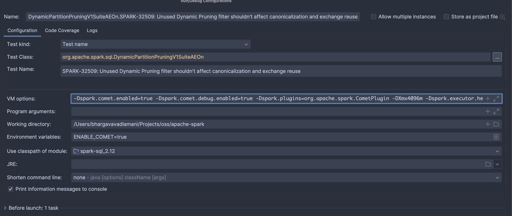

Running Spark SQL Tests¶
Running Apache Spark’s SQL tests with Comet enabled is a good way to ensure that Comet produces the same results as that version of Spark. To enable this, we apply some changes to the Apache Spark source code so that Comet is enabled when we run the tests.
Here is an overview of the changes that we need to make to Spark:
Update the pom.xml to add a dependency on Comet
Modify SparkSession to load the Comet extension
Modify TestHive to load Comet
Modify SQLTestUtilsBase to load Comet when
ENABLE_COMETenvironment variable exists
Here are the steps involved in running the Spark SQL tests with Comet, using Spark 3.4.3 for this example.
1. Install Comet¶
Run make release in Comet to install the Comet JAR into the local Maven repository, specifying the Spark version.
PROFILES="-Pspark-3.4" make release
2. Clone Spark and Apply Diff¶
Clone Apache Spark locally and apply the diff file from Comet.
Note: this is a shallow clone of a tagged Spark commit and is not suitable for general Spark development.
git clone -b 'v3.4.3' --single-branch --depth 1 git@github.com:apache/spark.git apache-spark
cd apache-spark
git apply ../datafusion-comet/dev/diffs/3.4.3.diff
3. Run Spark SQL Tests¶
Use the following commands to run the Spark SQL test suite locally.¶
ENABLE_COMET=true build/sbt catalyst/test
ENABLE_COMET=true build/sbt "sql/testOnly * -- -l org.apache.spark.tags.ExtendedSQLTest -l org.apache.spark.tags.SlowSQLTest"
ENABLE_COMET=true build/sbt "sql/testOnly * -- -n org.apache.spark.tags.ExtendedSQLTest"
ENABLE_COMET=true build/sbt "sql/testOnly * -- -n org.apache.spark.tags.SlowSQLTest"
ENABLE_COMET=true build/sbt "hive/testOnly * -- -l org.apache.spark.tags.ExtendedHiveTest -l org.apache.spark.tags.SlowHiveTest"
ENABLE_COMET=true build/sbt "hive/testOnly * -- -n org.apache.spark.tags.ExtendedHiveTest"
ENABLE_COMET=true build/sbt "hive/testOnly * -- -n org.apache.spark.tags.SlowHiveTest"
Steps to run individual test suites through SBT¶
Open SBT with Comet enabled
ENABLE_COMET=true sbt -J-Xmx4096m -Dspark.test.includeSlowTests=true
Run individual tests (Below code runs test named
SPARK-35568in thespark-sqlmodule)
sql/testOnly org.apache.spark.sql.DynamicPartitionPruningV1SuiteAEOn -- -z "SPARK-35568"
Steps to run individual test suites in IntelliJ IDE¶
Add below configuration in VM Options for your test case (apache-spark repository)
-Dspark.comet.enabled=true -Dspark.comet.debug.enabled=true -Dspark.plugins=org.apache.spark.CometPlugin -DXmx4096m -Dspark.executor.heartbeatInterval=20000 -Dspark.network.timeout=10000 --add-exports=java.base/sun.nio.ch=ALL-UNNAMED --add-opens=java.base/java.nio=ALL-UNNAMED
Set
ENABLE_COMET=truein environment variables After the above tests are configured, spark tests can be run with debugging enabled on spark/comet code. Note that Comet is added as a dependency and the classes are readonly while debugging from Spark. Any new changes to Comet are to be built and deployed locally through the command (
PROFILES="-Pspark-3.4" make release)
Creating a diff file for a new Spark version¶
Once Comet has support for a new Spark version, we need to create a diff file that can be applied to that version of Apache Spark to enable Comet when running tests. This is a highly manual process and the process can vary depending on the changes in the new version of Spark, but here is a general guide to the process.
We typically start by applying a patch from a previous version of Spark. For example, when enabling the tests for Spark version 3.5.6 we may start by applying the existing diff for 3.5.5 first.
cd git/apache/spark
git checkout v3.5.6
git apply --reject --whitespace=fix ../datafusion-comet/dev/diffs/3.5.5.diff
Any changes that cannot be cleanly applied will instead be written out to reject files. For example, the above command generated the following files.
find . -name "*.rej"
./pom.xml.rej
./sql/core/src/test/scala/org/apache/spark/sql/FileBasedDataSourceSuite.scala.rej
./sql/core/src/test/scala/org/apache/spark/sql/SubquerySuite.scala.rej
./sql/core/src/test/scala/org/apache/spark/sql/streaming/StreamingJoinSuite.scala.rej
./sql/core/src/test/scala/org/apache/spark/sql/streaming/StreamSuite.scala.rej
./sql/core/src/test/scala/org/apache/spark/sql/JoinSuite.scala.rej
./sql/core/src/test/scala/org/apache/spark/sql/execution/datasources/SchemaPruningSuite.scala.rej
./sql/core/src/test/scala/org/apache/spark/sql/execution/datasources/binaryfile/BinaryFileFormatSuite.scala.rej
./sql/core/src/test/scala/org/apache/spark/sql/execution/datasources/parquet/ParquetRebaseDatetimeSuite.scala.rej
./sql/core/src/test/scala/org/apache/spark/sql/execution/datasources/parquet/ParquetSchemaSuite.scala.rej
./sql/core/src/test/scala/org/apache/spark/sql/execution/WholeStageCodegenSuite.scala.rej
./sql/core/src/test/scala/org/apache/spark/sql/execution/adaptive/AdaptiveQueryExecSuite.scala.rej
./sql/core/src/test/scala/org/apache/spark/sql/sources/CreateTableAsSelectSuite.scala.rej
./sql/core/src/test/scala/org/apache/spark/sql/sources/BucketedReadSuite.scala.rej
./sql/core/src/test/scala/org/apache/spark/sql/sources/DisableUnnecessaryBucketedScanSuite.scala.rej
./sql/core/src/test/scala/org/apache/spark/sql/errors/QueryExecutionErrorsSuite.scala.rej
./sql/core/src/test/scala/org/apache/spark/sql/CachedTableSuite.scala.rej
./sql/core/src/main/scala/org/apache/spark/sql/SparkSession.scala.rej
The changes in these reject files need to be applied manually.
One method is to use the wiggle command (brew install wiggle on Mac).
For example:
wiggle --replace ./sql/core/src/test/scala/org/apache/spark/sql/SubquerySuite.scala ./sql/core/src/test/scala/org/apache/spark/sql/SubquerySuite.scala.rej
Generating The Diff File¶
The diff file can be generated using the git diff command. It may be necessary to set the core.abbrev
configuration setting to use 11 digits hashes for consistency with existing diff files.
Note that there is an IgnoreComet.scala that is not part of the Spark codebase, and therefore needs to be added
using git add before generating the diff.
git config core.abbrev 11;
git add sql/core/src/test/scala/org/apache/spark/sql/IgnoreComet.scala
git diff v3.5.6 > ../datafusion-comet/dev/diffs/3.5.6.diff
Running Tests in CI¶
The easiest way to run the tests is to create a PR against Comet and let CI run the tests. When working with a
new Spark version, the spark_sql_test.yaml and spark_sql_test_ansi.yaml files will need updating with the
new version.